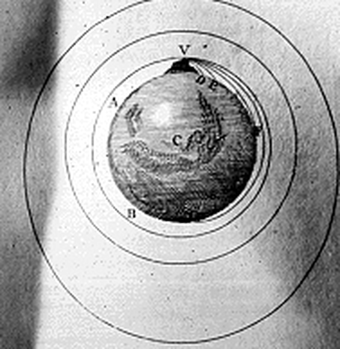

1 · Rechnen
2 · Vorhersage
3 · Abschussgeschwindigkeit
km/s
Rechne zuerst und mach dann deine Vorhersage.
Auswertung
Kurz nachdenken
Links deine Bahnen, rechts Newtons eigene Abbildung.

Fülle für jede deiner Bahnen die Spalten aus und klicke auf «Prüfen».